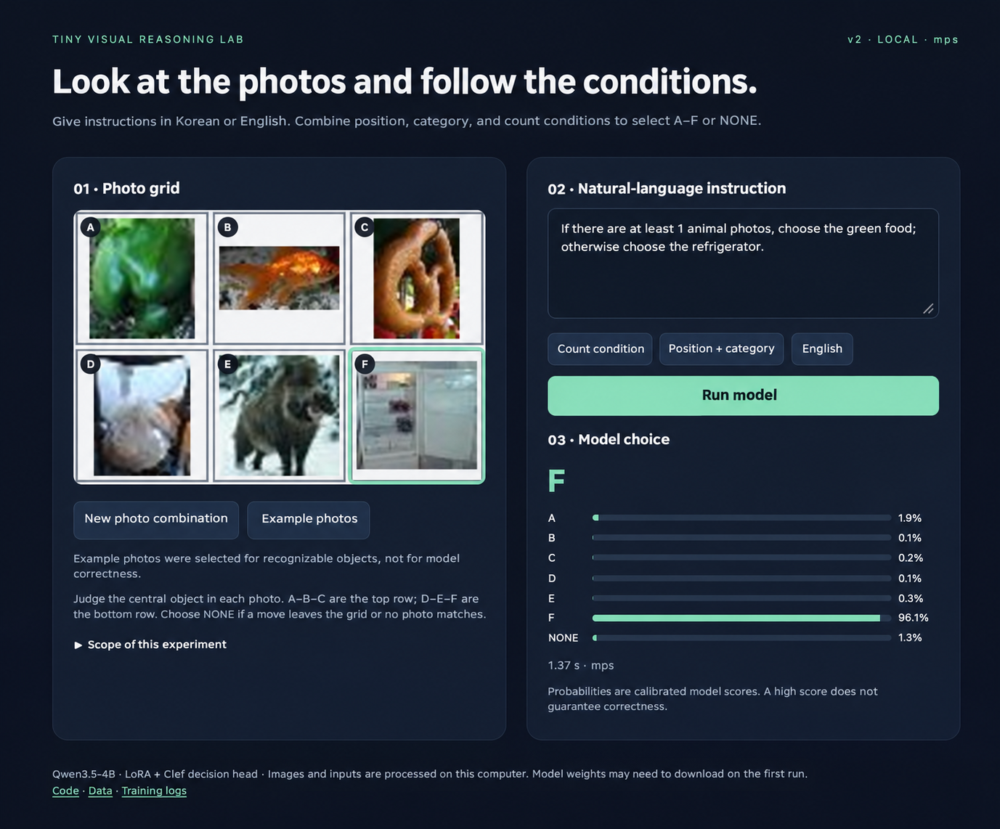
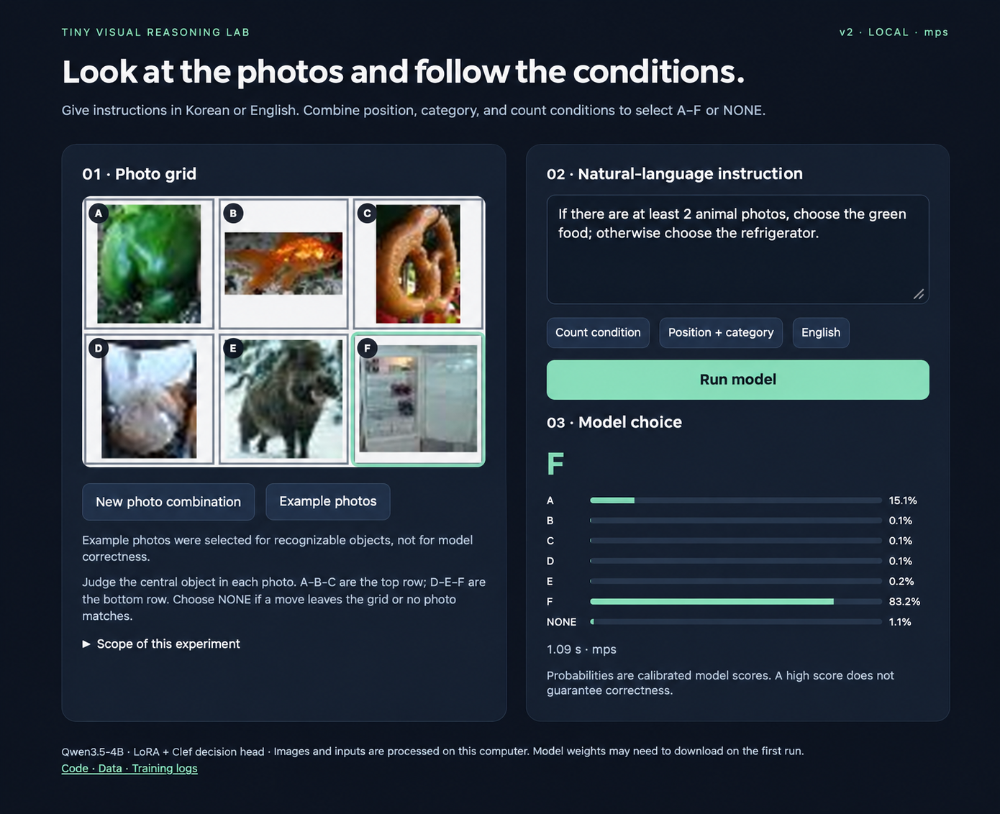
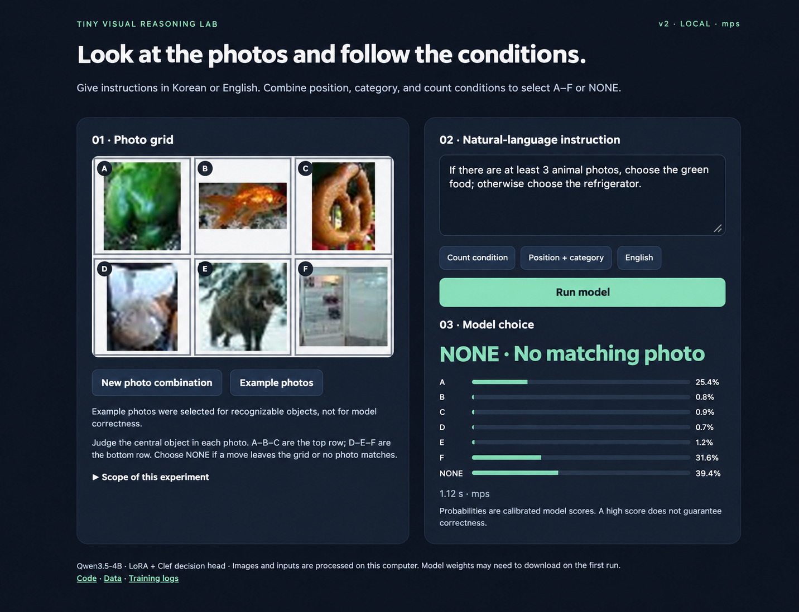

Machine-assisted English translation. Original code, logs, and model inputs are shown as recorded; consult the Korean article if wording is unclear.
Training a Decision Model with Six Photographs and Natural-Language Instructions
The two previous MNIST experiments trained models to choose from a fixed set of actions using handwritten digits and instructions: the first experiment used a target digit, and the second used three digits and natural-language instructions. Here, we replace the digits with photographs and consider position, object categories, and counts.
When it comes to looking at pictures and answering questions, visual language models (VLMs) are already good at it. VLM is a model learned to read images and sentences together. But what if you want to write the answer directly as an action in another program? For example, let's say you select one of six photos and pass the result to a robot or screen manipulation program. Rather than generating a long answer each time and finding the location in the sentence, it is easier to handle if the model gives a score to a given option and returns the location and probability immediately.
This method is called a decision model. The model we are creating this time calculates the score of the options at once instead of connecting sentences in small units called tokens, so it has the potential to reduce latency compared to methods that generate particularly long answers. If we use the VLM that has already learned pictures and language as a basis, how much less data and training can we learn for our new judgment problem?
We attach a decision head to Qwen3.5-4B and train it to select one of six photographs, or NONE. We test the first model on new photographs and instructions, add difficult types to the training data, and repeat the evaluation. We also compare accuracy and latency with generative Qwen on the same questions. The code and weights and experiment records are available.
1. The task
Saying “cat” when looking at a single picture is different from looking at several pictures and following the instruction “choose the photograph below and to the left of the cat.” The latter problem involves both recognizing objects and following their locations. First, let's start by placing six photos in two rows.

This is a photo plate that went into the actual model. Let's call the top row from left to right A·B·C and the bottom row D·E·F. The table below lists the central object of each column in an easy-to-read manner.
| left | middle | right | |
|---|---|---|---|
| top row | A: dog | B: Banana | C: cat |
| bottom line | D: lifeboat | E: Goldfish | F: Backpack |
The answer to “Choose a picture of a cat” is C. The direction is based on the person viewing the photo plate. For example, B is to the right of A, and D is below A. If you say, “Move one space to the left of the cat, then one space down,” you must follow the order C → B → E. The answer to “If there are three or more pictures of animals, choose a banana, otherwise choose a backpack” is B. This is because dogs, cats, and goldfish are animals.
At this time, counting Number of photos featuring animalsIt is. Even if there are multiple animals in a photo, they are expressed as one central object. If you move outside the grid or there are no photos that meet the conditions, select NONE. There are seven output spaces: A, B, C, D, E, F, and NONE.
2. Base model and trainable components
As a base model, we used Qwen3.5-4B, which can read images and text together. Two devices were added here. LoRAThis is the part where we adjust the existing model little by little to fit our problem. head for selectionThis is the part where Qwen receives the expressions made by reading the photos and instructions and calculates the scores of A–F and NONE. In this experiment, a head was created by referring to the Clef method and learned with LoRA. Physical model creation codeWow Deployment inference codediscloses.
For example, option B means “Select the photo in the middle of the top row.” Head calculates the score for each option by referring to the question and the input location corresponding to each option. It is composed of several layers that collect information and compare options, with an internal width of 512, routing on the 2nd floor, and decoder on the 4th floor. Head reference implementationYou can check the specific calculations here.
2×3 photo grid + instruction + choice definitions
↓
Qwen3.5-4B + trained LoRA
↓
Trained Clef head
↓
Scores for A B C D E F NONE
When the app sends a photo and instructions, the answer is the option with the highest score. If E is the highest, the program immediately receives the result “middle of the bottom row” without having to interpret the response statement. At this time, you can also obtain the probability of each option.
Now let's teach the model to give a high score to the correct box. The necessary correct answers are created in a separate rule program.
Let’s consider a problem where the correct answer is E. After converting the seven scores into probability using a calculation called softmax, we look at the probability of E. If a high probability is given to E, the loss will be small, and if a low probability is given, the loss will be large. In the formula, when the probability of the correct answer a is p(a), it is −log p(a). The key to learning is to modify LoRA and head little by little to reduce this loss.
LoRA leaves Qwen's existing weights as is and makes the necessary changes by learning a small matrix attached to them. If written as an equation, it is W + (alpha/r)BA, which is the change added to the existing weight W. Here, A and B are the learning matrices. Rank r determines the size of the small matrix, and alpha determines the size of the change. In this experiment, both are 16. The number of learning parameters is 64,511,492, including 32,464,896 LoRA and 32,046,596 selection heads. This corresponds to approximately 1.40% of the 4,603,777,028 logical parameters including the basic model·LoRA·head.
The base model reads in 4 bits to save GPU memory. Even if compressed and stored, the original logical number of weights remains the same, so 1.40% is a value calculated based on the total number of parameters, not the compressed storage size.
3. Defining categories and labels
The original is Tiny ImageNet. Among the 200 classes, 40 classes whose target was relatively clear even in small photos were used. The size was checked using the bounding box that marked the central object in the photo, and objects that were too small and duplicate photos with exactly the same RGB were excluded. The remaining photos were arranged in six spaces after cutting out the central object according to the bounding box. The original resolution is 64×64, so it is difficult to see small objects.
A table was created to clearly indicate which category each photo belongs to. For example, a goldfish is both a fish and an animal. Teddy bears do not count as animal pictures. If this definition is unclear, the answer to the sentence “How many animals are there?” will be inconsistent.
Class samples and sentence frames were reviewed by a coding agent. In some cases, the subject in the photo is obscured or other objects appear in the background. How consistently the criterion of central object is applied in these scenes is an important data quality challenge.
4. Generating instructions and labels
First, we create a semantic program that is independent of the sentence. For example, the previous C → B → E problem can be written as follows.
{"family":"chain","anchor":"cat","direction":"left","second_direction":"down"}
here anchormeans the starting target, the cat, and the two directions mean left and down, respectively. If you apply this rule to the photographic board, you will get the correct answer, E. Now, if the same rule is expressed in a sentence such as “Cat moves one space to the left, then one space down,” the instruction and the correct answer are completed as a pair. We also create pairs of problems where the correct answer is different by changing the direction or object on the same photo board. This is to encourage people to pay attention to the differences in instructions instead of just looking at the pictures and memorizing the answers.
At first, some expressions and two-condition combinations were set aside, and learning problems were created with the rest. This is to see how different it is when encountering a sentence or combination for the first time compared to simply changing the picture. 4,024 grids and 31,360 learning examples were created from 12,023 original photos, and there were 29,350 different sentences. Because multiple instructions are attached to one grid, the number of photos and examples are different. First data aggregation.
5. Evaluating the first model
The first training was conducted for 135.7 minutes on RTX 4070 Ti SUPER. From 31,360 training examples, the weights were changed 4,400 times using 8 weights at a time. This process of changing the weight once is called 1 step. In the middle of learning, we solved a separate verification problem and selected the weight of 2,400 steps, which had the best performance. To facilitate future comparisons, this first model was v1Let's call it . Study settings and records.
First, we solved the types of problems we learned using pictures that were not seen in the study. I got **93.48%** correct out of 1,120 questions. The result is that problems in this range can generally be solved even if the photo is changed. So, is it okay to ask the same thing in different words? What if we combined the conditions we learned separately into one question?
To test this, we created questions that expressed the same meaning in different sentence structures and questions that combined several conditions. Initially, the model did not learn this sentence frame and the two condition combinations. For example, after learning “the picture of the cat on the left,” ask, “there must be a cat on the right of the picture to choose.” The same goes for condition combinations. For example, a model that has learned the elements “Choose a fruit in the same row as the cat” and “Move down one space in the picture” is asked to “Find a picture of a fruit in the same row as the cat, and choose the picture directly below that fruit.” You must find a fruit in the same row and then move one space using that position as a starting point. All three tests below contain photos that were not used for learning, and each item has 1,120 questions.
| Test given to the first model | Correct Questions / All Questions | accuracy |
|---|---|---|
| New photo + expression with the same meaning changed | 888 / 1,120 | 79.29% |
| New photo + new condition combination | 759 / 1,120 | 67.77% |
| New photo + combination of rephrased expressions and new conditions | 614 / 1,120 | 54.82% |
It was lowered by changing the expression compared to 93.48% when only the photo was changed, and lowered even further by combining conditions. If you change all the expressions and combinations, it is a little more than half. Each test consisted of different questions. Looking at the results, it became necessary to examine under what expressions and conditions the model had difficulty. First evaluation record.
Now let's change the question. How much better will it be in the same photo problem if expressions and conditions expected to be entered by actual users are included in the learning rather than intentionally excluded?
6. Adding expressions and conditions
This time, the training data included 12 condition types to be supported, 6 sentence frames each for Korean and English, and a total of 144 sentences. Notations such as “three sheets/three sheets”, “3/three”, and “left/left” were also mixed. For example, by asking “the left side of the cat” and “the right side of the cat” on the same photo board, we created a pair of questions where the answer changed when the direction changed. First, we decided on these 12 types as the scope of support and organized them to practice various speaking styles and conditions within them.
| training data | first model | Enriched data |
|---|---|---|
| original photo | 12,023 copies | 12,830 copies |
| 2×3 photo board | 4,024 | 4,825 |
| Instruction/answer example | 31,360 | 37,632 |
| different sentences | 29,350 | 36,328 |
Both versions use the same training photo pool, so the number of photos overlaps. Photos for learning, verification, correction, and evaluation were separated using the original photo ID and RGB hash, and the evaluation photos were kept separately even in reinforcement learning. Data organization and inspection.
Using this data, we subsequently learned the LoRA and head of the first model. This second model v2Let's call it. This method starts from the weights of v1 and learns once more with the reinforced data.
7. Epochs and training
v2 inherits the weight of step 2,400 selected in v1. I plan to learn by looking at the 37,632 reinforced examples one by one. Since 8 are used at a time, it takes a total of 4,704 steps.
Examining a training example once is called 1 epoch. There are several examples that ask for the same judgment rule even if the pictures and sentences are different. For example, “Cat to the right” and “Frog to the right” are different examples but practice finding the same direction. Each condition type contains 3,136 examples.
Qwen is already pre-trained to handle photos and language together. On that basis, we taught how to link pictures and instructions to scores for seven options. This use of the representation of a pre-trained model may be one of the reasons why it was adapted to this task with relatively short additional learning. In the background, basic Qwen before further study also challenges the same problem.
The actual equipment is one RTX 4070 Ti SUPER 16 GB of Windows, Ryzen 7 9800X3D, and 64 GB of RAM. The basic model is read with NF4 4bit and calculated with BF16. The LoRA learning rate is 1e-4, the head learning rate is 5e-5, and a cosine schedule is used.
The actual additional learning took place for 148.1 minutes. It is based on Trainer records and excludes pre-download, data generation, and final evaluation times. This is additional time separate from v1's overall run of 135.7 minutes. The weight of step 3,600, which was the highest in the 336 fixed validations, is distributed. If the highest scores are the same, the checkpoint saved first is kept.
| item | actual record |
|---|---|
| equipment | NVIDIA GeForce RTX 4070 Ti SUPER · Windows · RAM approximately 64 GB |
| Additional study examples | 37,632 |
| Additional learning completed | 4,704 step · 1.00 epoch |
| Trainer run time | 148.1 minutes |
| Selected deployment checkpoint | v2 step 3,600 |
| Present v2 examples up to the point of selection | 28,800 times |
| Select score from 336 fixed validations | 97.62% |
| Maximum PyTorch Allocation/Reservation | 6.20 / 7.06 GiB |
The parent checkpoint in v1 was selected at step 2,400, reflecting 19,200 example presentations. The v2 deployment checkpoint has seen an additional 28,800 views there. v2 learning was completed up to 4,704 steps, but the deployment model contains learning up to the selected 3,600 steps.

The graph above shows the loss recorded during training and the moving average of the most recent 20 values. The graph below shows the verification accuracy calculated using photos that were not used for learning. Now let’s solve the same test for v1 and v2 and compare the results. settings, Total loss history, Verification trend, Real time/memory.
8. Comparison of v1 and v2
Now, let’s solve the three evaluation problems that we previously identified as difficult. Use 1,120 each with the same photo, sentence, and correct answer.
| Existing evaluation classification | v1 | v2 final | change |
|---|---|---|---|
| New photo + expression with the same meaning changed | 79.29% | 95.71% | +16.43%p |
| New photo + new condition combination | 67.77% | 95.71% | +27.95%p |
| New photo + combination of rephrased expressions and new conditions | 54.82% | 95.62% | +40.80%p |
All three items rose to about 95.6-95.7%. Before reading these numbers, let's look at the relationship between test and training data. Incorrect test questions and pictures were not included in the study as is. After looking at the test results of v1 and checking which combinations of expressions and conditions were difficult, we strengthened v2 by adding the same sentence frame and condition type to examples made from different learning photos. Based on the original photo ID and image hash, the photos for learning and testing were divided so that they did not overlap.
Therefore, this table is Ability to apply learned expressions and conditions to new photosThis shows how much it has improved. On the other hand, v2 A combination of expressions or conditions that you have never seen beforeIt is not possible to judge from this table whether it generalizes well. This is because those types were already included in v2 learning. Also, because the test results of v1 influenced the direction of data reinforcement, it is more accurate to read this test as a test comparing before and after reinforcement rather than a completely independent final test. To see generalization to new expressions and combinations, a new test that separates both and pictures is needed. Complete test questions and photo placement records.

We also checked whether the photo ID, sentence, and correct answer matched in the tests of the two models. Forecast by problemand Before and after comparison recordsYou can look at them together.
Separately, in v2_test 2,016 problems that included all types in a balanced manner, v1 84.52% → v2 95.78% showed results. Korean was 84.33% → 95.63%, English was 84.72% → 95.93%. This is a set of problems created separately from the previous three items. Comparison of 2,016 identical questions.
See test questions and reinforcement data side by side
What does a problem with improved accuracy actually look like? In each test, v1 got one Korean question wrong and v2 got it right. Immediately below it is a v2 learning example using the same type and sentence frame. Each photo plate is labeled A, B, C from the left in the top row, and D, E, F in the bottom row. Let's compare the two questions and see what judgments we practiced.
When asked to change the expression
test photo board test_language-00056

Please select a photo according to the following conditions. Find a picture of a kitchen appliance, but make sure there is a picture of sunglasses right below it. Movement outside the box is answered with NONE.
Correct answer B · v1 E → v2 B
Sunglasses are at E. The kettle in box B just above is a kitchen utensil, and there are sunglasses right below it, so B is the correct answer.
Reinforcement learning example v2_train-04308

Look at this photo board and answer. Find a picture of a device that runs on electricity or electronics, but make sure there is a picture of a goose just to the right of the picture. Movement outside the box is answered with NONE.
The correct answer for this study example is EIt is. v1 prediction · v2 prediction
When two conditions are asked in succession
test photo board test_composition-00095

Let me ask you a favor. Find a photo of food in the same row as the photo of the tractor, and select the photo that is moved one space to the left.
Correct answer B · v1 A → v2 B
If you find a picture of food in the same top row as Tractor B, it is C's green pepper. If you move one space to the left from C, it becomes B.
Reinforcement learning example v2_train-03936

Find a photo of an insect in the same row as the backpack photo, and select the photo that is moved one space up from that photo. If there is no corresponding photo, it is NONE.
The correct answer for this study example is AIt is. v1 prediction · v2 prediction
When the expression and condition combination are changed together
test photo board test_combined-00031

Let me ask you a favor. The space to start moving to is the insect picture in the same row as the butterfly picture. From there, move one space to the left.
Correct answer D · v1 E → v2 D
The butterfly is at E. The insect in the same lower row is also a butterfly of E, so it starts from E. D's dog, which has moved one space to the left, is the correct answer.
Reinforcement learning example v2_train-02693

Please select a photo according to the following conditions. The space to start moving to is the picture of a device that operates on electricity or electronics in the same row as the picture of the penguin. From there, move one space to the left. If there is no corresponding photo, it is NONE.
The correct answer for this study example is EIt is. v1 prediction · v2 prediction
Although the photos and subjects of each pair are different, the structure of the judgment required by the question is similar. Reinforcement learning examples were selected from the entire v2 training data, and it was not checked whether each of these examples was presented up to the selected checkpoint. Source of each photo and record of questions and answers.
9. Limitations of overall accuracy
Finding an object, moving two steps, branching counts, and comparing counts by category have different difficulties. The table below shows the results for each condition calculated from the separate v2_test 2,016 problems. There are 168 questions per condition, and they are separated from the existing three-item table above.
| Condition type | Example instructions (actual assessment sentences) | v1 | v2 |
|---|---|---|---|
| Exclude from same row |
|
85.71% | 97.02% |
| Find a category in the row of the moved cell |
|
90.48% | 97.02% |
| Find a category in the column of the moved cell |
|
93.45% | 99.40% |
| move two steps |
|
88.10% | 99.40% |
| Find your target |
|
89.29% | 91.07% |
| categories in the same column |
|
94.05% | 98.81% |
| Branch by count |
|
79.17% | 88.69% |
| Adjacent locations and categories |
|
85.12% | 99.40% |
| adjacent location |
|
87.50% | 97.62% |
| Find and move categories in the same row |
|
44.64% | 95.83% |
| Compare counts by category |
|
82.74% | 88.10% |
| categories in the same row |
|
94.05% | 97.02% |
Looking at the table, the problem of finding and moving categories in the same row increased significantly from 44.64% to 95.83%. On the other hand, the question of choosing according to number increased from 79.17% to 88.69%, leaving more room for examination than other types.
Now let's look at the incorrect answers from two tests dealing with combinations of expressions and conditions. Next, we will solve the third incorrect answer together by looking at the photo board.
test_composition: “First find ladybug, then step one tile to the left. Which fish photo shares that column? Choose NONE if no tile qualifies.” → Correct answer NONE, prediction A. Photo plate IDtest_composition-00003.test_combined: “I would like to ask you a favor. Choose a picture of a mammal, but you have to move one space to the right from the cat and find it in the column you arrive at. If there is no matching picture, it is NONE.” → Correct answer NONE, prediction C. Photo plate IDtest_combined-00001.
View incorrect answers with pictures

Let me ask you a favor. The photo you choose must be a photo of food and be in the same row as the photo of an Egyptian cat. If there is no corresponding photo, it is NONE.
Correct answer A · v2 NONE
In the same top row as cat B, there is lemon A, which is food. Therefore, the correct answer is A, but v2 chose NONE because there are no photos that meet the conditions. The photo plate ID is test_language-00106It is. actual prediction history.
Photos were taken from Stanford Tiny ImageNet. The original ID and selection criteria for the demonstration/test photo plate are Photo source/prediction recordWell, the source of the reinforcement learning example is Study and test example recordsleft on The rights to the photo belong to the original owner, and the Apache-2.0 License of the project code does not apply to the photo.
There were also 14 demonstration questions written in colloquial language. On the same photo board, v1 got 12 correct and v2 got 11 correct. In particular, incorrect answers remained in questions that were changed to refer to numbers and comparison conditions. This demonstration will give you an idea of which speech style to look at next. Colloquial real predictions.
Three screens I personally entered
This is a screen where the user changes the standard of animal photos to 1, 2, or 3 photos on the same photo board. You can see green food in A, a goldfish in B, and a picture of an animal in E. When the standard is 1 or 2, at least two cards, B and E, are animals, so A is the natural answer. The screen displayed F in both cases. The third screen shows NONE.



The probability of displaying F on the first screen was 96.1%, and on the second screen it was 83.2%. Selections that received high scores are also examples of the need to check photos and conditions together. The screenshot shows the input fields and selection results, but it is not possible to check from the screen alone whether the decision button was pressed again after changing the question. Since there are no original records to determine the central object of the third blurry D photo, the correct answer in that case will not be determined here. The MPS execution times displayed on the screen are 1.37 seconds, 1.09 seconds, and 1.12 seconds, and the equipment and measurement context are different from the Windows GPU comparison below.
Will the same judgment be reached if the saved weights are read again? The choices of training implementation, deployment CUDA, and CPU were all consistent across the 24 validation samples. The accuracy of all 336 verification tests was 97.62% for both training and distribution CUDA. Reloading inspection.
It is worth looking at the probability as much as the answer. To adjust for the model's tendency to be overly confident, the temperature was set to 1.8302 with 1,008 separate problems. Since the score is divided by the same positive number, the choice itself remains and the size of the probability changes. In the problem used for calibration, the negative log-likelihood was reduced from 0.1997 to 0.1420. Calibration history.
Next time, let's prepare new pictures and questions outside the sentence frame we reinforced this time. By doing so, you can also see how widely you can use the expressions you have learned in new situations.
10. Findings
At first, the model was good at solving the types of problems learned from new photos, but when the expressions and conditions were changed together, the model dropped to 54.82%. After continuing learning including the missing types, I got 95.62% on the same problem. The starting point for improvement was the process of finding out what difficult cases were and creating data to teach those cases.
Thanks to a base model that had already learned images and language together, we were able to focus on connecting pictures and instructions to desired choices rather than teaching them objects from scratch. In the background, basic Qwen before further study also challenges the same problem.
Even within one epoch, we practiced the same judgment several times by changing pictures and sentences. As seen in Section 7, v2 continued training from v1 and distributed 3,600 step weights selected as verification scores. In the two interim sample tests, changes in each item were mixed. When going from 1,600 steps to 2,000 steps, I got one more problem correct with the new expression, but got two more problems wrong with expressions and combinations. Midterm evaluation record, second record. Each sample was 56 problems, v2 was CPU, and the stored v1 prediction was CUDA.
The most interesting thing is that the desired form of judgment can be specified through data. Instead of vaguely asking, “Understand the location,” it shows two questions with different directions and their respective correct answers. Incorrect answers found in the 14 spoken language demonstrations indicate which expressions to reinforce and test next.
11. Comparison with generative Qwen
The decision model created earlier calculates the scores of seven options at once. So what if we showed Qwen the same picture and question, and had him write the correct answer in text as if chatting? In this method, the model generates the following tokens one by one to complete the answer. Let's compare the accuracy and time of the two methods on the same problem.
First, we asked the basic Qwen to answer A–F or NONE and gave up to 8 tokens with thinking mode turned off. Some outputs started with an explanation but did not finish the answer. Would giving more tokens or turning on thinking mode change the results?
To compare with the same photos and questions v2_testin 96 questionschose. Four questions each for 12 task types were selected in Korean and English. The first 8-token experiment and the four settings that follow used the same problem. The generative model is Qwen3.5-4B without fine tuning, and the decision model is v2, which was additionally learned from the same base model. All ran at NF4 4bit/BF16 on RTX 4070 Ti SUPER.
v2 learned the sentence frames and condition types for this task. For the test, photos that were not used for learning were used, and multiple questions were posted on a single photo board.
The generative type was asked the same question each time and instructed to answer A–F or NONE, and the token limit was changed to 40 and 120. Each was tested by turning thinking mode on and off. The answers were not chosen randomly, and each time the model chose the next token with the highest score.
| Model/Settings | strictly correct answer | Format Allowed Correct Answer | Final answer not recognized | limit reached | central time |
|---|---|---|---|---|---|
| decision model v2 | 93/96 (96.88%) | same value | 0 | Not applicable | 157.1ms |
| Generative · Think off · 8 tokens (existing) | 29/96 (30.21%) | 30/96 (31.25%) | 4 | no record | 226.7ms |
| Generative · Think off · 40 tokens | 29/96 (30.21%) | 30/96 (31.25%) | 3 | 3 | 243.7ms |
| Generative · Think on · 40 tokens | 0/96 (0.00%) | 0/96 (0.00%) | 96 | 96 | 1597.9ms |
| Generative · Think off · 120 tokens | 29/96 (30.21%) | 30/96 (31.25%) | 3 | 3 | 239.9ms |
| Generative · Think on · 120 tokens | 0/96 (0.00%) | 0/96 (0.00%) | 96 | 96 | 4613.3ms |
In the state of thinking off, I got 30 out of 96 questions correct for both 40 tokens and 120 tokens. BNot only in cases where only the choice is answered, as in 정답: BLikewise, answers marked as correct are also accepted numbers. The ‘strictly correct answer’ in the table counts cases in which only the options are printed, and even if a period is added at the end, it is accepted. ‘Final answer not recognized’ was calculated based on strict format standards in the first 8 token experiment. 정답: BThere are 4, including , and this is the standard that allowed that format in subsequent experiments.
When I turned on my thoughts, something else happened. While the model continued to think while explaining the photos and conditions, all the tokens were used up. For both 40 tokens and 120 tokens, the final answer was not found in 96 questions. So it is displayed as 0/96 in the table. Distinguish the options mentioned in your thoughts from the final answer, </think> Only the latter answers were graded. Output tokens are also used to think, so you need to leave enough tokens to finish thinking to get the final answer.
The speed was measured after loading the model in advance and preparing and executing three problems. It is the middle value when listing the time taken from image preprocessing to GPU calculation and result conversion in order of fastest. Model loading, file reading, and HTTP communication were excluded from the measurements. When writing long generative answers, the time to create the token is also included.
So when is a decision model useful?
What I notice in these results is When the purpose of the decision is determined, the capabilities of the large model can be connected to small outputs that fit the purpose.The point is. What is needed in this experiment is not a long description of the photo, but either A–F or NONE. Once the selection score appears, the program can move on to the next action without having to find the answer again in the sentence, and you can also look at the scores of the seven options.
In the same 96 problems, the additionally learned decision model got 93 correct answers, and the median time was 157.1ms. The basic Qwen that caught my mind is 정답: B If the same answer is acknowledged, 30 were correct, and the median time for the 40 token setting was 243.7ms. In this measurement, the decision model was about 1.55 times faster. This is the result obtained by comparing the case of using the basic Qwen as is and the case of using the model learned for this task side by side.
The cost of learning is also an attractive feature of this method. Based on Qwen, which has already learned pictures and language, we learned LoRA and head, which account for about 1.40% of the total logic parameters. After creating v1, it took 148.1 minutes on one GPU of this computer to reinforce the expressions and conditions needed in v2. This time is additional learning time for v2, and before that, 135.7 minutes of v1 learning and data production and evaluation were also required. Still, it is practical to be able to adapt existing models in a relatively short period of time by providing examples that fit the new task.
Of course, not all questions have fixed options. A generative model is more natural when listening to explanations or asking unexpected questions. On the other hand, such as objects the robot will pick up or locations to press on the screen. A problem with a set of possible actionsIn this case, it is worth considering a decision model that teaches the desired judgment through examples and immediately receives the selection results. This experiment is the first step in confirming that possibility in a small photo selection problem.
Think Off · 40 Tokens · Think on · 40 tokens · Think Off · 120 Tokens · Think on · 120 tokens · Comparison Summary · evaluation code · Existing 8 token output.
12. Inference: from image to choice
Previously, we looked at how well the model makes choices. This time, let’s call the same model directly from the code and give it a picture and instructions. The example below uses the photo plate that appeared at the beginning of the article.
A: dog B: banana C: cat
D: lifeboat E: goldfish F: backpack
If you give the instruction “From the cat, go one space to the left, then one space down,” the correct answer is E because C → B → E. Let's run the Unsloth code used for training and the inference code used by the app, respectively.
12.1 Making six images into a photo plate
Instead of putting six separate files in the model, One image joined in two linesPut it in. From the top left are A, B, C, and the bottom row is D, E, and F. The photo plate to be used in the example is from the repository. docs/figures/example-canonical.pngIt's already in.
If you have prepared six photos yourself, render You can create the same shape with a function. You can change the file name to fit your photo.
from PIL import Image
from render import render
# 파일을 A, B, C, D, E, F 순서로 나열한다.
paths = [
"photos/a.jpg", "photos/b.jpg", "photos/c.jpg",
"photos/d.jpg", "photos/e.jpg", "photos/f.jpg",
]
photos = []
for path in paths:
with Image.open(path) as source:
photos.append(source.convert("RGB"))
board = render(photos) # 여섯 장을 384×256 사진판 한 장으로 합친다.
board.save("my-board.png")
render()Maintain the proportions of the photos and place them in each column. This image and Korean instructions go into the model. Photo plates created in the app also use the same function. Code to create a photo plate · Read photos in app.
12.2 Load model learned with Unsloth
In this project Unsloth's FastDecisionModelWhen learning and verifying during learning, predict()called . First, get the v2 weights from the repository. The code below shows the Windows·NVIDIA CUDA environment and Unsloth used in the experiment. 2026.10.10It is based on . After installing PyTorch for CUDA, install the learning dependency.
python -m pip install -r requirements-train.txt
python -m pip install bitsandbytes==0.50.2
python download_model.py --version v2 --output weights-v2
weights-v2Contains the learned LoRA and the head for selection. The basic Qwen weights are received separately from Hugging Face during the first inference and stored in the cache. already weights-v2If received, omit the download command.
Now, let’s read the photo, bring up the model, and ask a question. Below is the repository Runnable example It's all. in the repository folder python example_unsloth_inference.pyRun it with
"""공개 v2 모델을 Unsloth의 CUDA 추론 방식으로 실행한다."""
import json
import os
from pathlib import Path
os.environ.setdefault('UNSLOTH_COMPILE_DISABLE', '1')
from PIL import Image
from unsloth import FastDecisionModel
import torch
from schema import questions
def main():
# 사진 여섯 장이 A–F 순서로 합쳐진 이미지다.
image_path = Path('docs/figures/example-canonical.png')
with Image.open(image_path) as source:
image = source.convert('RGB')
instruction = '고양이에서 왼쪽으로 한 칸, 그다음 아래로 한 칸 이동한 사진을 골라줘.'
model, processor = FastDecisionModel.from_pretrained(
'weights-v2', load_in_4bit=True, dtype=torch.bfloat16
)
FastDecisionModel.for_inference(model)
result = FastDecisionModel.predict(
model, processor, instruction, questions(), images=[image]
)['select']
print(json.dumps(result, ensure_ascii=False, indent=2))
if __name__ == '__main__':
main()
In order, they are as follows:
Image.open()Reads the photo plate and converts it to an RGB image. To use your own photo plateimage_pathJust change it.from_pretrained()isweights-v2Read the settings and load the default Qwen, learned LoRA, and head.load_in_4bit=Trueis a setting that reduces GPU memory usage in the basic model.for_inference()After preparing the inference,predict()The model, processor, instructions, selection definitions, and photo plate are delivered to the system.images=[image]What is included is a series of six chapters. a photo plateIt is. of codeUNSLOTH_COMPILE_DISABLEare the compilation settings used in this experiment.- in the return value
selectis the result of this selection problem. in itansweris A–F or NONE,probabilitiescontains the score for each option in probability form.
processorturns pictures and sentences into input that Qwen can process. Qwen reads the input, and head creates scores for the seven options. At this time generate()Instead of continuing the answer sentence for each token, predict()returns the selection result.
The output of running the above code on this computer was as follows:
{
"type": "choice",
"choice": "E",
"confidence": 1.0,
"probabilities": {
"A": 0.0, "B": 0.0, "C": 0.0, "D": 0.0,
"E": 1.0, "F": 0.0, "NONE": 0.0
},
"answer": "E"
}
This is the result of moving from C to B on the left to E below. This version of Unsloth rounds the output probability to four decimal places. 1.0and 0.0was displayed. When solving multiple problems in succession, load the model once and then change the images and instructions. predict()Just call again.
12.3 How does the model know which seven options to choose?
in the above code questions()is a function for inserting the meaning of the selection into the model input. For example, if you run the following code, you can see what each statement selects:
import json
from schema import questions
print(json.dumps(questions()["select"]["criteria"], indent=2))
{
"A": "Choose the top left photograph.",
"B": "Choose the top middle photograph.",
"C": "Choose the top right photograph.",
"D": "Choose the bottom left photograph.",
"E": "Choose the bottom middle photograph.",
"F": "Choose the bottom right photograph.",
"NONE": "No photograph satisfies the instruction."
}
questions()Along with this table, it also contains explanations about the placement of the photo plate, moving one space, and NONE. This definition is Which answer can you choose? Let me know. It does not indicate which box is the correct answer. The model reads the photo and the user's instructions and gives a score to the seven options. Define all options · Actual verification code during training.
12.4 Beyond this example: Input and output of the Decision API
in front questions()is a function created to suit our photo selection problem. It is not a special function name originally included in Unsloth. Let's get away from the photo issue here for a moment. FastDecisionModelLet's take a look at what information we can provide. The description below describes the Unsloth installed in this experiment. 2026.10.10It is based on the Python implementation of . Implementation of Unsloth's Decision model · Question format processing code.
First prepare the model: from_pretrained()
The main arguments of the function that loads the model are as follows. The default values below are those of the version stated above. FastDecisionModel It's the standard.
model, processor = FastDecisionModel.from_pretrained(
model_name="경로 또는 모델 ID",
load_in_4bit=True,
dtype=torch.bfloat16,
)
FastDecisionModel.for_inference(model)
| factor | default | What you do |
|---|---|---|
model_name |
required | This is the local checkpoint folder path or Hugging Face model ID. In our example "weights-v2"c. |
subfolder |
None |
Used when reading a specific subfolder within a model repository or folder. |
max_seq_length |
None |
This is the input length setting to use when preparing the model. If omitted, the default value of the model loader is used. |
dtype |
None |
Specifies the data type to be used for calculation. On supported devices, e.g. torch.bfloat16You can write . |
load_in_4bit |
False |
Save memory by loading supported models with 4-bit quantization. |
load_in_8bit |
False |
In this version of the Decision model, Truedoes not support |
full_finetuning |
False |
This setting determines whether to learn the entire weight during subsequent learning. |
token |
None |
This is an authentication token to be used when receiving a Hugging Face model that requires access permission. |
revision |
None |
Specifies a specific branch/tag/commit of the Hugging Face model. |
local_files_only |
False |
Requests to use local files and cache when finding checkpoints. The basic model file referenced by the adapter must also be prepared separately. |
use_gradient_checkpointing |
"unsloth" |
This is a setting that adjusts memory usage by reducing the storage of intermediate values when learning. |
random_state |
3407 |
This is a random number seed used in the model preparation and training process. |
**kwargs |
— | These are additional settings to be passed to the model loader in use. For example, in a general-base model decision_head="clef"can be specified. |
returned modelis the model to be judged, and the second value is the tokenizer for text or the processor that also processes images. In the previous example, we need an image, so we name the variable processorIt was attached as for_inference(model)Prepares the model in evaluation mode. This step prepares the model, the real questions are: predict()Do it in
When loading an already learned decision checkpoint, the saved head is read. On the other hand, when creating a new head from a general-base model, the process of training the head with data to make the desired decision is necessary. us weights-v2is a checkpoint where the learned head and LoRA are stored together.
Ask: predict()
def predict(model, tokenizer, state, questions, *, images=None) -> dict:
...
The line above shows the location of the argument. function signaturec. *is for explanatory purposes and is not used in actual calls. imagesis images=[image]Name it like this and pass it on.
| factor | role | In the photo example |
|---|---|---|
model |
from_pretrained()This is a decision model called. |
Contains Qwen and learned LoRA·head model |
tokenizer |
It is a tokenizer that creates model input. In a Clef model with an image, from_pretrained()gave it back processorPut it in. |
processor |
state |
This is the situation or context that the model will judge. You can use strings, and in Clef, you can also pass structures that can be expressed in JSON. | Natural language directives written by the user |
questions |
It is a dictionary that determines what to judge and what type of answer to give. Multiple questions with different names can be included at once. | questions()made by select question |
images |
Optional. Photos are delivered to models and processors that support image input. You can use a PIL image list and the order of the list is maintained. | [image]: One photo plate combining six photos |
If you judge by text alone imagescan be omitted. To use an image, you need a model and processor that can process the image input. Although you can pass multiple images directly to the API, our experiment combined six photos into one grid. Records related to Unsloth multi-image support.
questions What to put inside?
For example, let's say you're choosing how to process a delivery order. stateThe current situation, questionsContains the questions the model will answer about the situation.
state = "아직 발송 전인 주문이며, 구매자가 배송지 변경을 요청했다."
questions = {
"next_action": {
"type": "choice",
"instructions": "이 주문을 어떻게 처리할까?",
"criteria": {
"update": "배송지를 수정한다.",
"contact": "추가 정보를 확인한다.",
"leave": "주문을 변경하지 않는다.",
},
}
}
# model과 tokenizer는 앞에서 준비한 decision model과 tokenizer다.
answers = FastDecisionModel.predict(model, tokenizer, state, questions)
print(answers["next_action"]["answer"])
next_actionis what we decided question nameIt is. The result is retrieved with the same name in the return value. typeis the type of answer, instructionsis the question, criteriaContains the answers you can choose and their meaning. instructionsIf you leave it blank, Clef uses the question name as the description. update, contact, leave This is also an optional name chosen by the user. The above code is an example of the form of the API, and to determine a delivery order, a model suitable for the purpose and learning/evaluation are required.
For photo problems, the question name with the same structure is selectSet it as criteriaA–F and NONE were added. questionsis not a table that shows the correct answer. frame to choose the answeris to convey. Separately from the training data goldEnter the correct answer in , but do not enter it when making inferences.
Three types of questions and return values
In this version of the API, the question's typeThere are three things:
type |
How to ask questions | criteria |
returned answer |
|---|---|---|---|
choice |
Choose one of several options. | Dictionary of option names and descriptions, or list of option names | Selected name, e.g. "update" |
noul |
Judge yes or no. | omit it or true·falseDictionary explaining the meaning of |
True or False |
score |
Determine which level of the sequential steps you are at. | List of explanations in order from lowest level to lowest level | The number of the step with the highest probability. The first step is 0 |
For example "priority": {"type": "score", "instructions": "처리 우선순위는?", "criteria": ["낮음", "보통", "높음"]}It can be defined like this: If you want to ask more questions questions Just add a name and definition inside.
The return value is a dictionary with the question name as the key. choiceThe result of the selected choice, of that choice confidence, by choice probabilitiesand can be easily taken out answergoes in. noulis the probability of being true noulYes, final true/false answerPut it in. scoreYou can see the probability and explanation for each step, scoreis the probability weighted average of the step numbers, answeris the most likely step number. Problems A–F in this experiment are of three types: choicewas used.
stateWow questionshas a different role. stateis What is the situation now?, questionsis What to ask about the situation and what type of answer to askContains The photo app seen earlier uses this distinction to deliver natural language instructions and seven choices to the model.
12.5 What should we include when learning a decision model?
in front predict()I relayed the situation and questions to . The input remains the same during learning. here What is the correct answer in that situation?Just add one more.
Training: state + questions + gold → update the model
Inference: state + questions → select an answer
It is not a format that only applies to photographic plates. This time, as a small example of choosing a method to handle a delivery inquiry without a photo, let's look at how data goes through model training and leads to inference. The code below is Unsloth 2026.10.10, Transformers 5.17.0, Based on Windows·NVIDIA CUDA environment. Implementing the Unsloth Decision Model.
1. Create one row of training data
Let's say you want to change the shipping address if your order hasn't shipped yet and you've received a new address. Below is the first training line of the actual example file.
{
"state": "주문은 발송 전이고 새 배송지가 확인되었다.",
"questions": {
"next_action": {
"type": "choice",
"instructions": "주문을 어떻게 처리할까요?",
"criteria": {
"update": "배송지를 수정한다.",
"contact": "구매자에게 필요한 정보를 확인한다.",
"leave": "주문을 변경하지 않는다."
}
}
},
"gold": {
"next_action": "update"
}
}
stateis the situation to be judged by the model. questionsis the name, format, and option description of the question. goldis the correct answer to that question. Here the question name is next_actionAnd, the correct answer updatego criteriaMatches the option name in . In the photo example statenatural language instructions, questionsA–F and NONE, goldI put the correct answer box in .
The file stores one JSON object per line. JSONL It is a form. The above object has been spread out over multiple lines for easier reading. The same question is asked in different situations, and the correct answer is specified for each situation. If you have multiple questions questionsWow goldInsert items with the same name into each.
This example uses 6 training lines and 3 separate validation rows. full training data · validation data. These two files are small examples of the API usage sequence.
2. Prepare model and training data
First, read the data and prepare a new decision head and LoRA in the base model. Then build_dataset()Convert this JSON line into a format that the model can learn. Below, the core code is divided in order. To run right away Full training fileYou can use .
import json
import os
from pathlib import Path
os.environ.setdefault("UNSLOTH_COMPILE_DISABLE", "1")
from unsloth import FastDecisionModel, DecisionTrainer
import torch
from transformers import TrainingArguments
data_dir = Path("examples/order_decision")
output_dir = Path(".cache/order-decision-tutorial")
checkpoint = output_dir / "model"
def read_jsonl(path):
with path.open(encoding="utf-8") as file:
return [json.loads(line) for line in file if line.strip()]
train_rows = read_jsonl(data_dir / "train.jsonl")
validation_rows = read_jsonl(data_dir / "validation.jsonl")
model, processor = FastDecisionModel.from_pretrained(
model_name='Qwen/Qwen3.5-4B',
revision='851bf6e806efd8d0a36b00ddf55e13ccb7b8cd0a',
decision_head='clef',
max_seq_length=1024,
load_in_4bit=True,
dtype=torch.bfloat16,
)
model = FastDecisionModel.get_peft_model(
model, r=16, lora_alpha=16, lora_dropout=0,
use_gradient_checkpointing='unsloth', random_state=3407,
)
Here, it is not the v2 weight of the photo experiment. Default Qwen3.5-4BIt starts from decision_head="clef"Create a new head with get_peft_model()Attach LoRA. When learning from a checkpoint that already contains a LoRA, the saved one must be used instead of adding a new LoRA.
Let’s also look at the arguments used when attaching LoRA in this code.
get_peft_model() factor |
role | this example |
|---|---|---|
model |
Decision model to add LoRA | just loaded model |
r |
Rank of LoRA matrix. It is concerned with the number of parameters to be learned and the width of change to be expressed. | 16 |
lora_alpha |
Value that determines the scale of LoRA change amount | 16 |
lora_dropout |
Dropout rate to apply when learning LoRA | 0 |
use_gradient_checkpointing |
Settings to save memory during learning | "unsloth" |
random_state |
Random number seed to use for initialization, etc. | 3407 |
from_pretrained()of model_name, dtype, load_in_4bit These were dealt with in the argument table in Section 12.4 immediately preceding.
train_items, train_report = FastDecisionModel.build_dataset(train_rows, processor, model)
valid_items, valid_report = FastDecisionModel.build_dataset(validation_rows, processor, model)
print('학습 데이터 검사:', train_report)
print('검증 데이터 검사:', valid_report)
for report in (train_report, valid_report):
if report['skipped'] or report['truncated']:
raise ValueError(f'데이터를 확인해 주세요: {report}')
FastDecisionModel.build_dataset(rows, tokenizer, model, validate=None)The arguments are as follows.
| factor | role |
|---|---|
rows |
state, questions, goldTraining or verification rows containing |
tokenizer |
Tokenizer received when loading the model. The model with the image is passed to the processor. |
model |
decision model to check input length and model type |
validate |
Optional. A function that receives the question name and definition and performs additional checks. |
The return value is (items, report)c. itemsis the data to be entered into the learner, reportContains the number of questions processed, items skipped, and length exceeded. Multiple questions per row totalIt can be increased by the number of questions, not the number of banks. In this example, if there were any incorrectly skipped items or truncated inputs, they were checked before training.
3. DecisionTrainerLearn with
training_args = TrainingArguments(
output_dir=str(output_dir / 'trainer'),
per_device_train_batch_size=2,
gradient_accumulation_steps=1,
max_steps=2, # 실행 흐름을 확인하기 위한 짧은 시연
learning_rate=0.0002,
bf16=True,
logging_steps=1,
save_strategy='no',
eval_strategy='no',
optim='adamw_torch',
dataloader_num_workers=0,
dataloader_pin_memory=False,
report_to='none',
seed=3407,
)
FastDecisionModel.for_training(model)
trainer = DecisionTrainer(
model=model,
args=training_args,
processing_class=processor,
train_dataset=train_items,
eval_dataset=valid_items,
head_learning_rate=0.00005,
)
trainer.train()
DecisionTrainerThe arguments passed to are as follows.
| factor | role |
|---|---|
model |
decision model to learn |
args |
Contains batch size, learning rate, etc. TrainingArguments |
processing_class |
tokenizer or processor that processes model input |
train_dataset |
build_dataset()Training data converted to |
eval_dataset |
Verification data converted in the same way |
head_learning_rate |
Learning rate to be applied separately to the head for selection |
Here is the LoRA side learning_rateto 0.0002, head is 0.00005set to . In this version head_learning_rateIf omitted, in head 0.0001Use . trainer.train()Learning begins when you call .
DecisionTraineralso has additional arguments to use when needed. Not specified in this example.
| optional argument | role |
|---|---|
tokenizer |
processing_class Instead, it is used when passing a tokenizer or processor. |
label_smoothing |
This is a setting that divides some of the weight into other options rather than giving all weight to the correct answer. |
brier_weight |
This is the weight of the loss term that deals with the difference between the probability of the choice and the correct answer. |
ordinal_weight |
score The weight of the loss term reflects the distance between the selected step in the type and the correct step. |
kl_weight |
This is the weight of the term that reduces the difference in output distribution based on the output of the head at the start of learning and the base model with LoRA turned off. This version applies to the combination of Clef and LoRA. |
permute_fields |
When there are multiple questions in one row, decide whether to shuffle the question order during learning. |
callbacks |
Conveys user-defined actions that are inspected or recorded at specific steps during learning. |
data_collator |
Directly specify a function that creates a batch by grouping examples. If omitted, the collator appropriate for the model type is used. |
TrainingArgumentsThe main settings are as follows. Description of TrainingArguments for Hugging Face.
| settings | meaning | this example |
|---|---|---|
output_dir |
Folder to place records during learning | Under the specified output folder trainer |
per_device_train_batch_size |
Number of examples to be processed by one device at a time | 2 |
gradient_accumulation_steps |
How many calculation results are collected to update the weight once? | 1 |
max_steps |
Number of times to update the weights. positive side num_train_epochstakes precedence over |
2 |
learning_rate |
Learning rate of learnable base model side parameters | 0.0002 |
bf16 |
Whether to use bfloat16 operation on supported devices | True |
logging_steps |
Interval to record learning status | falcon 1 step |
save_strategy, eval_strategy |
Timing of auto-save and auto-evaluation during learning | both "no"; Verify and save directly below |
report_to |
Whether to send records to an external experiment tracking service | "none" |
These numbers are not the default values for the API. Values specified directly in this exampleam. Since 2 steps are executed on one GPU without accumulation, 2 at a time, a total of 4 examples are presented. It is not a setting to improve performance by repeatedly learning all six rows, but a setting to check the order of data → learning → saving.
4. Verify, save and reload
FastDecisionModel.for_inference(model)
print('검증 결과:', FastDecisionModel.evaluate(model, processor, valid_items))
model.save_pretrained(str(checkpoint))
processor.save_pretrained(str(checkpoint))
Because we have turned off automatic evaluation here FastDecisionModel.evaluate()Call directly and calculate the accuracy in a separate verification row. Then model.save_pretrained()Learning results as, processor.save_pretrained()Save the files needed for input processing. The storage folder for this LoRA example contains the adapter and decision head, and the base Qwen weights are loaded separately.
evaluate(model, tokenizer, items, batch_size=None)Includes a model, a tokenizer or processor to process the input, build_dataset()Enter the verification items you created. batch_sizeoptionally specifies the number of items to be evaluated at one time. From the returned results: accuracyWow loss etc. can be checked.
Now the save folder in the new process is from_pretrained(), and make inferences using questions in the same format as situations not used in learning. Inference calls include golddoes not convey Below is Separate inference file It's all.
"""저장한 모델을 다시 읽고 검증 예제의 상황과 질문으로 추론한다."""
import argparse
import json
import os
from pathlib import Path
os.environ.setdefault('UNSLOTH_COMPILE_DISABLE', '1')
from unsloth import FastDecisionModel
import torch
def main():
parser = argparse.ArgumentParser()
parser.add_argument('--output-dir', default='.cache/order-decision-tutorial')
args = parser.parse_args()
checkpoint = Path(args.output_dir) / 'model'
data_path = Path(__file__).resolve().parent / 'validation.jsonl'
with data_path.open(encoding='utf-8') as file:
example = json.loads(next(file))
model, processor = FastDecisionModel.from_pretrained(
str(checkpoint), load_in_4bit=True, dtype=torch.bfloat16
)
FastDecisionModel.for_inference(model)
answers = FastDecisionModel.predict(
model, processor, example['state'], example['questions']
)
print('상황:', example['state'])
print('모델 선택:', answers['next_action']['answer'])
print('선택지별 확률:', answers['next_action']['probabilities'])
if __name__ == '__main__':
main()
The entire example is run as follows in the repository folder: The learning dependencies from the previous section and PyTorch for CUDA must be prepared. The basic model is downloaded the first time you use it.
python examples/order_decision/train.py
python examples/order_decision/predict.py
The default storage location is .cache/order-decision-tutorialIt is. If you have a saved model with the same name, both commands --output-dirYou can specify another folder. When actually learning on this computer and verifying it before saving 0 out of 3 questions are correctIt was. The model that was saved and reread also gave the expected answer in the first verification problem. update instead leavechose. Since this is a two-step demonstration, when creating an actual service, you must prepare sufficient examples and design a learning amount and a separate evaluation set. Run check history.
Which training row contains the image?
in the same structure imagesJust add more. The following is Python code with the image path and correct answer as an example. Prepare the correct answer separately for the actual photo.
from PIL import Image
with Image.open("photos/parcel.jpg") as source:
photo = source.convert("RGB")
row = {
"state": "택배 사진을 보고 겉면의 파손 여부를 확인한다.",
"images": [photo],
"questions": {
"damaged": {
"type": "noul",
"instructions": "택배 상자가 파손되었는가?",
}
},
"gold": {"damaged": True}, # 이 예시 사진의 정답이라고 가정
}
items, report = FastDecisionModel.build_dataset([row], processor, model)
At this time modeland processorMust be able to process images. Since the PIL object cannot be saved as is in JSONL, it can be configured by writing the image path in the file and opening the image when reading the data. In the previous photo experiment, we learned with a photo board, instructions, options, and correct answers, and when making inferences, only the same photo board, instructions, and options were delivered. The actual data conversion code for this project.
How to run it in 12.6 app?
Public apps use a combination of **Transformers·PEFT and Clef head instead of Unsloth so that they can run on Mac's MPS and CPU. DecisionEngineUse **. The Unsloth inference we saw just above is the method used in the training and verification code, and below is an example of directly calling the same method as the app.
"""로컬 앱과 같은 추론 엔진을 직접 호출한다."""
import json
from pathlib import Path
from PIL import Image
from engine import DecisionEngine
def main():
image_path = Path('docs/figures/example-canonical.png')
with Image.open(image_path) as source:
image = source.convert('RGB')
instruction = '고양이에서 왼쪽으로 한 칸, 그다음 아래로 한 칸 이동한 사진을 골라줘.'
engine = DecisionEngine(checkpoint='weights-v2', device='auto')
result = engine.predict(image, instruction)
print(json.dumps(result, ensure_ascii=False, indent=2))
if __name__ == '__main__':
main()
from repository python example_app_inference.pyRun it with device="auto"Select the devices in the order of available CUDA, MPS, and CPU. When checked on the same Windows GPU, this code also Echose. The app's actual inference code.
DecisionEngine Inside, photos, instructions, and choices are converted into model inputs, and seven scores (logits) are obtained through Qwen and the learned head. Then, in the actual code, the probability is calculated as follows and the highest option is returned.
# engine.py의 predict()에서 발췌
logits = self.logits(image, instruction)
probs = (logits / self.temperature).softmax(-1).cpu().tolist()
of the app self.temperatureThe correction value obtained from the 1,008 problems previously is reflected. The Unsloth example above uses the temperature from the model settings and separate calibration.jsonSince is not applied, the output probability may be different even if the selection of the two codes is the same. In the 24 validation samples that reread the same weights, Unsloth, App CUDA, and App CPU all made the same selection. Reload comparison history.
13. Model weights and execution
When running it directly, it is convenient to know where the file comes from. The basic Qwen model is obtained from Hugging Face, and the learned LoRA·head and correction values are obtained from the GitHub Release of this project. Photos are obtained separately from Stanford's Tiny ImageNet.
The reason it is faster after the first run is because it reuses the saved basic model and learning weights. It is not a structure that re-learns every time it is run.
| composition | Source and Size |
|---|---|
| Basic VLM | Hugging Face Qwen/Qwen3.5-4B, original snapshot approximately 9.34 GB |
| Learned LoRA·head·processor·correction values | GitHub model-v2, 174,218,456 bytes |
| original photo data | Stanford Tiny ImageNet, 248,100,043 bytes |
The basic model revision is 851bf6e806efd8d0a36b00ddf55e13ccb7b8cd0aIt was fixed as . The SHA-256 of the learned weight archive is 8bfc48b4850ae200d4320c77bddba03eea4f52e2b66f737910aa8b15ec296240It is. v2 download manifest, Basic model file hash, v1 archiveprovides.
git clone https://github.com/gisbi-kim/tiny-visual-reasoning-lab.git
cd tiny-visual-reasoning-lab
python -m pip install torch torchvision
python -m pip install -r requirements.txt
python download_model.py --version v2 --output weights-v2
python fetch_assets.py --dataset-only
python prepare_demo.py
python app.py --checkpoint weights-v2 --device cpu
Run in a virtual environment of Python 3.11 or 3.12. In NVIDIA CUDA, install PyTorch and bitsandbytes appropriate for the environment. --device cudaUse . The browser address is http://127.0.0.1:7861It is. For detailed installation/learning reproduction instructions, READMEWow v2 training historyIt is in
The CPU/MPS path uses the float32 model, so the basic model itself requires approximately 18.3 GB. The screen above provided by the user shows an example of MPS execution. However, since the actual memory and speed of each Mac model were not measured separately, you must check the free space required for a 16 GB Mac yourself.
14. Experiment records
If you want to follow the numbers in this article yourself, you can check the data aggregation, learning settings, loss, verification trends, and actual predictions in the experiment material below. During training, loss and verification results were recorded at regular intervals.
JSON and execution log were released together so that you can directly check the figures in the text. Experiment material informationSettings, learning trends, overall predictions, intermediate evaluations, failure cases, environment, weights, and inspection records are connected. Console log and execution-specific records, Hash manifest of public files and originals, Public download/app inspectionAlso provided. In the record, only the personal home path and terminal control characters were organized and the numbers were preserved.
The practical lesson to be learned from this example is how to teach an already trained VLM the desired judgment task with explicit data. Adaptation effects can only be explained by determining the scope of expressions and conditions, creating consistent correct answers, and checking before-and-after changes and failures of the same evaluation problem.
Note: Qwen3.5-4B, LoRA paper, CLIP papers, Clef, Previous MNIST tutorial.